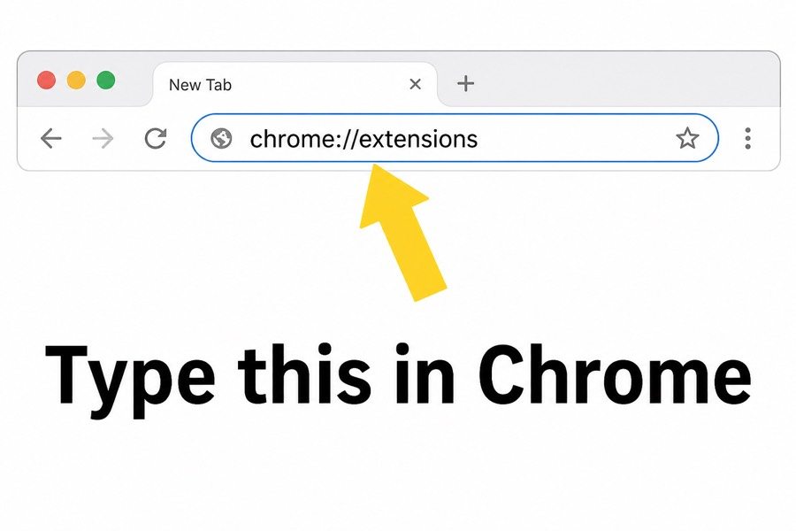
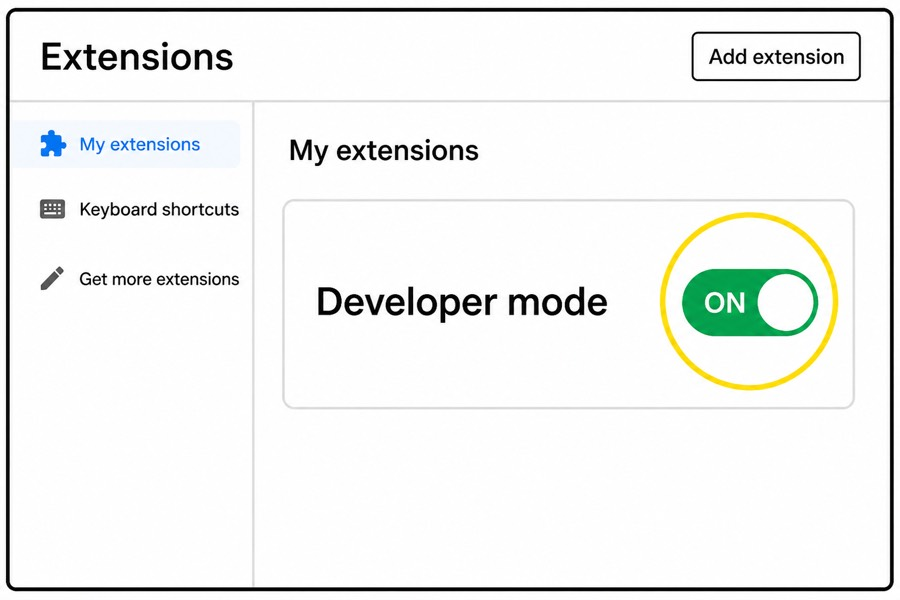
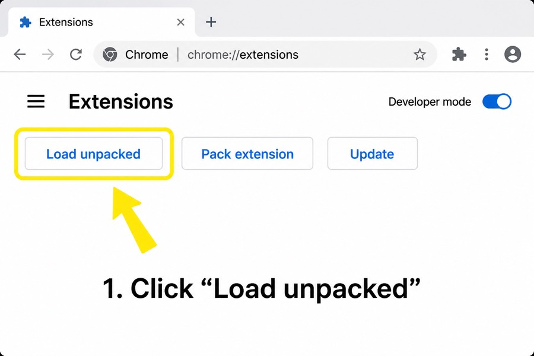
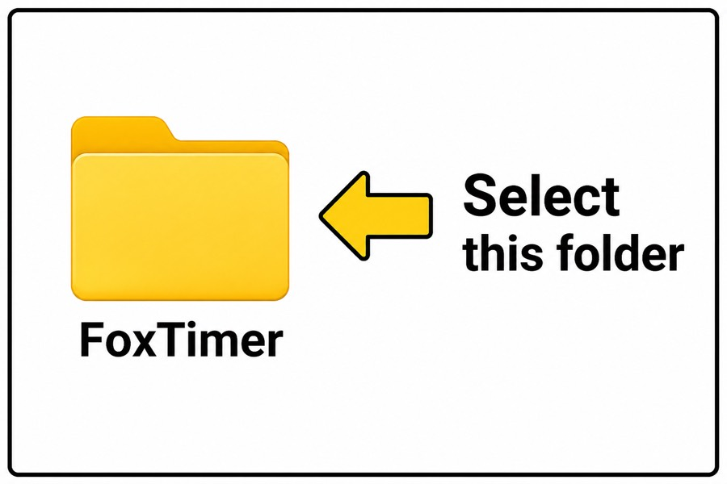
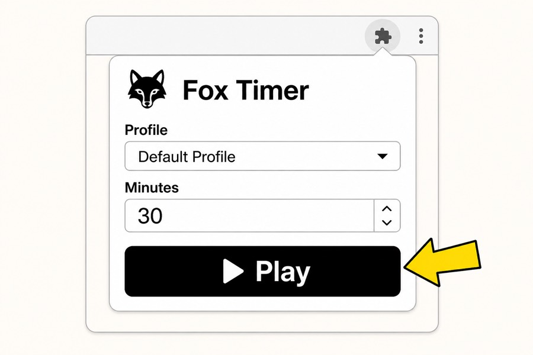

Install Fox Timer
Follow the pictures. Use Google Chrome.
Follow the pictures. Use Google Chrome.
Click the top bar in Chrome. Type this, then press Enter:

Type: chrome://extensions
Look in the top-right. Flip the switch so it turns green / ON.

Developer mode = ON
After Developer mode is on, this button appears. Click it.

Click Load unpacked
After unzipping you should see a folder named FoxTimer. On Windows: right-click the ZIP → Extract All… then select that folder here.

Pick the FoxTimer folder → Open
Open ATI → click the fox icon → set minutes → press Play. Then focus on learning.

Press Play, then study